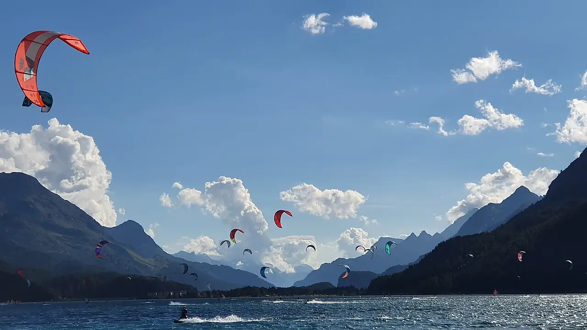

Lac de Silvaplana
Haute-Engadine, Grisons, Suisse · kitesurf, windsurf

Lac de haute montagne dans l’Engadine, au pied du Piz Corvatsch. Presque chaque après-midi d’été, le vent de la Maloja s’y lève et attire kitesurfeurs et windsurfeurs du monde entier.
- Lieu
- Haute-Engadine, Grisons, Suisse
- Niveau
- Intermédiaire
- Activités
- kitesurf, windsurf
- Type d'eau
- lake
- Coordonnées
- 46.46, 9.80 (position approximative du secteur)
Dangers à connaître
- Eau glaciale de lac d’altitude.
- Vent qui peut forcir et tourner en fin de journée.
- Altitude d’environ 1 800 m : soleil et effort plus intenses.
Le conseil d'Ocean Buddy
Arrive en début d’après-midi, quand le vent de la Maloja s’installe, et prévois une combinaison épaisse.
Ouvrir dans Ocean Buddy Télécharger sur l'App Store
Source : Fiche Ocean Buddy · septembre 2026 · à vérifier localement.